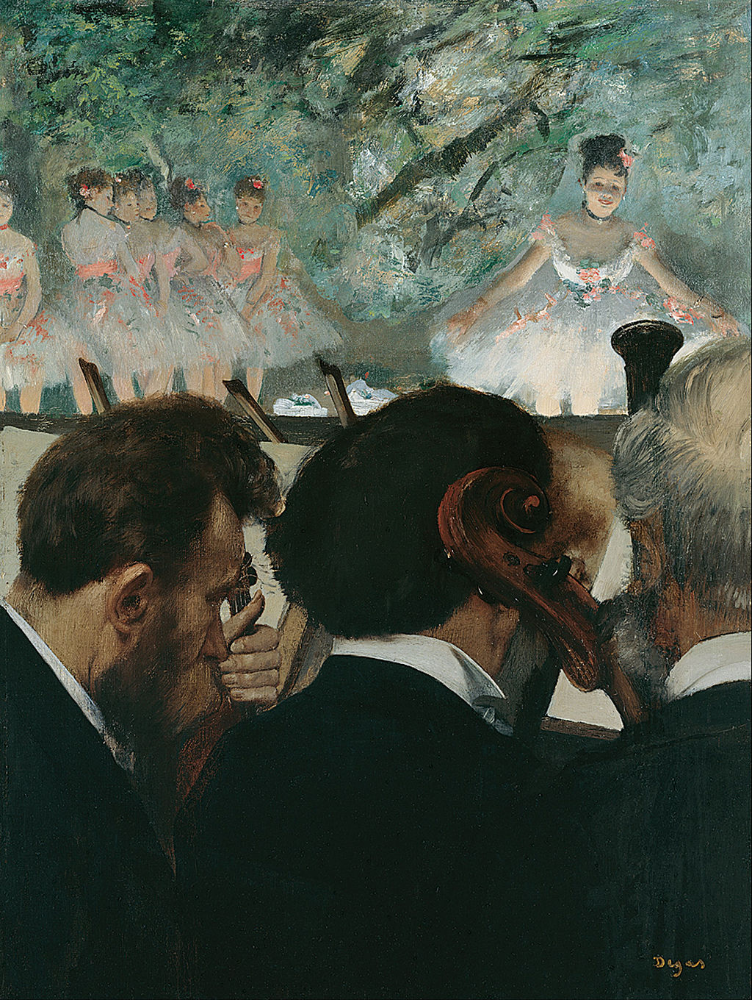

<head>
<meta charset="UTF-8" />
<meta name="keywords" content="drawing, painting" />
<meta name="description" content="drawings by Sunjy" />
<title>Sunjy</title>
<link rel="shortcut icon" type="image/x-icon" href="../../mImages/mCommon/favicon.ico" media="screen" />
<link rel="stylesheet" type="text/css" href="../../mCsses/mCommon/mCssA.css" />
<link rel="stylesheet" type="text/css" href="../../mCsses/mCommon/mCssB.css" />
<link rel="stylesheet" type="text/css" href="../../mCsses/mCommon/mCssC.css" />
<link rel="stylesheet" type="text/css" href="../../mCsses/mCommon/mCssD.css" />
<link rel="stylesheet" type="text/css" href="../../mCsses/mContent/mCssA.css" />
<link rel="stylesheet" type="text/css" href="../../mCsses/mContent/mCssB.css" />
<link rel="stylesheet" type="text/css" href="../../mCsses/mContent/mCssC.css" />
<link rel="stylesheet" type="text/css" href="../../mCsses/mContent/mCssD.css" />
</head>
<script type="text/javascript" src="../../mScripts/mContent/mContentAA.js" /></script>
<script type="text/javascript" src="../../mScripts/mContent/mContentAB.js" /></script>
<script type="text/javascript" src="../../mScripts/mContent/mContentAC.js" /></script>
<script type="text/javascript" src="../../mScripts/mContent/mContentAD.js" /></script>
<script type="text/javascript"></script> 
<script type="text/javascript">
document.write('<div class="mImgAbsolute"></div>');
/*
document.write('<p class="mFontSizeBColor" />From a white paper...</p>');
document.write('<table class="center"><tr><td>');
document.write('');
document.write('</td></tr></table>');
*/
</script>


<script type="text/javascript">
document.write('<p class="mFontSizeBColor" />Orchestra Musicians</p>');
document.write('<p class="mFontSizeSColor" />“Orchestra Musicians” depicts in the foreground part of the opera orchestra. Only the back of three musicians is visible in the bottom half of the composition, dominated by the black and white of their clothing.<br><br>The top half of the piece is the opera stage with ballet dances in full light, color, and movement. There is a distinct contrast between the youthful dances and the older aged male musicians who are squeezed together, as their black coats merge into one dark mass.<br><br>Degas initially painted a different version of the “Orchestra Musicians” in 1872 but revised it a few years later, enlarging it and converting the horizontal format into a vertical. He also overpainted parts of the original composition.<br><br>Degas added a piece of fabric to the upper edge of the canvas to make it a vertical format. He glued two canvas pieces onto another textile for support.<br><br>At the seam, a shallow horizontal groove is visible on the surface of the paint layer at the level of the dancers’ waists. The two different types of fabric are discernible in the X-ray image.<br><br>The original composition had the musicians in the orchestra pit at the center, and, on the stage in the background, only the lower half of the ballet dancers were visible.<br><br>In the revised composition, the focus on the musicians has widened to include the stage and its dancers. This painting launched a series of ballet depictions for which Degas is famous.<br><br>With his depictions of the ballet, Degas captured a world that excited his taste for classical beauty and his eye for modern realism.<br><br>He became a regular visitor to the Paris Opéra and its Ballet, and he invented new techniques for drawing and painting the world of pink and white.<br></p>');
document.write('<table class="center" /><tr><td>');
document.write('<br>The top half of the piece is the opera stage with ballet dances in full light, color, and movement. There is a distinct contrast between the youthful dances and the older aged male musicians who are squeezed together, as their black coats merge into one dark mass.<br><br>Degas initially painted a different version of the “Orchestra Musicians” in 1872 but revised it a few years later, enlarging it and converting the horizontal format into a vertical. He also overpainted parts of the original composition.<br><br>Degas added a piece of fabric to the upper edge of the canvas to make it a vertical format. He glued two canvas pieces onto another textile for support.<br><br>At the seam, a shallow horizontal groove is visible on the surface of the paint layer at the level of the dancers’ waists. The two different types of fabric are discernible in the X-ray image.<br><br>The original composition had the musicians in the orchestra pit at the center, and, on the stage in the background, only the lower half of the ballet dancers were visible.<br><br>In the revised composition, the focus on the musicians has widened to include the stage and its dancers. This painting launched a series of ballet depictions for which Degas is famous.<br><br>With his depictions of the ballet, Degas captured a world that excited his taste for classical beauty and his eye for modern realism.<br><br>He became a regular visitor to the Paris Opéra and its Ballet, and he invented new techniques for drawing and painting the world of pink and white.<br>" />');
document.write('</td></tr></table>');
</script>


